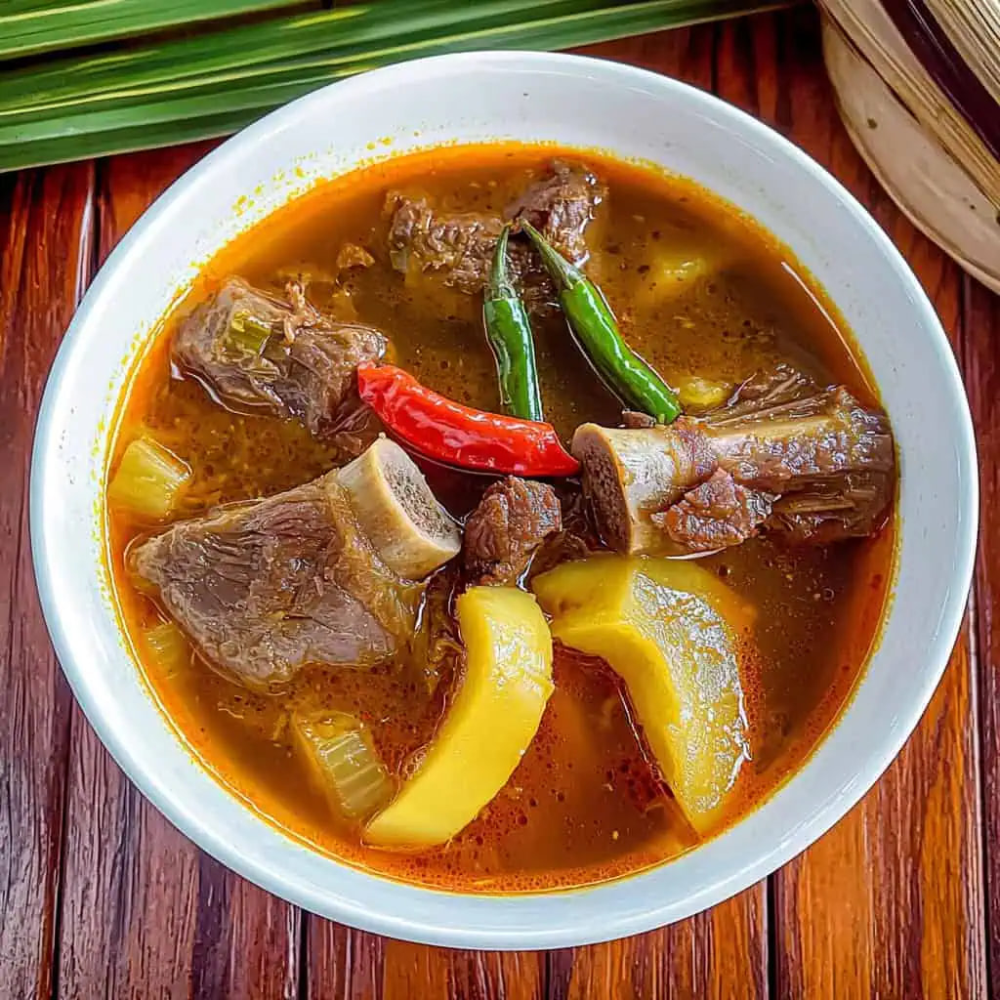

Iloilo and Bacolod
Kansi
Kansi (or Cansi) is an Ilonggo/Bacolodnon comfort food that is best described as a cross between Bulalo (beef bone marrow soup) and Sinigang (sour soup). Originating in the Negros region, its distinct sourness comes from batuan, a sour fruit native to the Visayas. The soup is rich from the slow-cooked beef shank and bone marrow, tangy from the batuan, and slightly thick due to the addition of unripe jackfruit (langka). It is often spiced with annatto for a reddish hue and lemongrass for aroma.

Gather
Ingredients
- Beef shank with bone marrow
- Batuan fruit (or tamarind/sinigang mix as an alternative)
- Lemongrass, pounded
- Unripe jackfruit (langka), sliced
- Annatto seeds (soaked in water to extract color)
- Garlic and onions
- Finger chilies (siling haba)
- Fish sauce (patis)
- Water
Make it
Recipe
- In a large pot, cover the beef shanks with water. Bring to a boil and remove the scum.
- Add the onions, garlic, and pounded lemongrass. Lower the heat and simmer for 2 to 3 hours until the beef is very tender.
- If using fresh batuan, boil them in a separate small pot until soft, mash them to extract the sour juices, and strain the juice into the beef broth. (If using sinigang mix, add it directly).
- Add the sliced unripe jackfruit and cook until tender.
- Pour in the annatto water to give the broth a slight orange-red color.
- Season with fish sauce and add the finger chilies. Let it simmer for another 10 minutes.
- Serve piping hot with lots of rice.